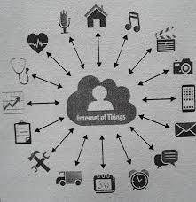

Links:
Benefits
The Internet of Things enables people to effectively and easily control things closely and remotely
For example, the user can operate and control his car's engine from his computer. One can control the duties of washing with his washing machine, and he can also learn the contents of the refrigerator remotely through the use of Internet calling. However, these are examples of the primitive form of the Internet of Things. A more mature form is that different things “understand” each other using the Internet protocol.
For example, the refrigerator can correspond with the shopping center, buy supplies, and connect them without human intervention. A computer specialized in a car maintenance workshop can also communicate (messaging) remotely with a car to reveal a mistake in it without what the car needs to visit the workshop, or the car learns the edges, sidewalks, road signs and taking Decisions to walk or park without driver intervention. Also, a water mist can be launched on the order of the humidity and temperature sensor at the meteorological station. It is left to the reader to imagine many examples of the Internet of Things that are already becoming a reality in our daily lives

Automation of devices can also be used in remote health management, and in the system of emergency alerts. Health management systems can be used to measure blood pressure and manage the heartbeat and may be used in advanced medical devices such as pacemakers and hearing aids. Some hospitals have started to use "smart beds" which can determine whether beds are vacant, and may also be used to find out if a patient is trying to get up. It can also adjust itself to ensure proper pressure and support to the patient. Sensors can also monitor the health of the elderly in the living rooms. Other wireless devices can encourage a healthy user like wearable heart meters. There are many other health monitoring platforms